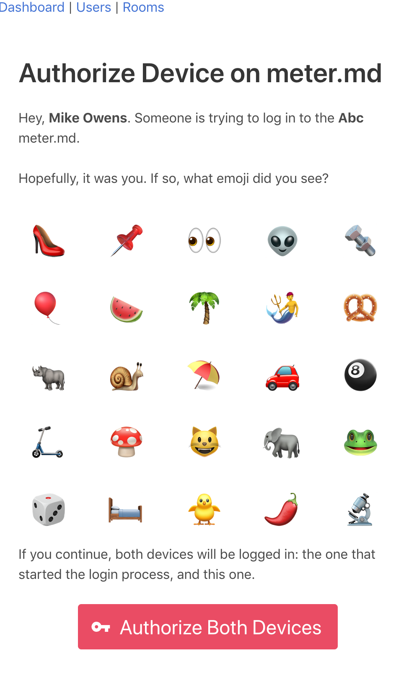
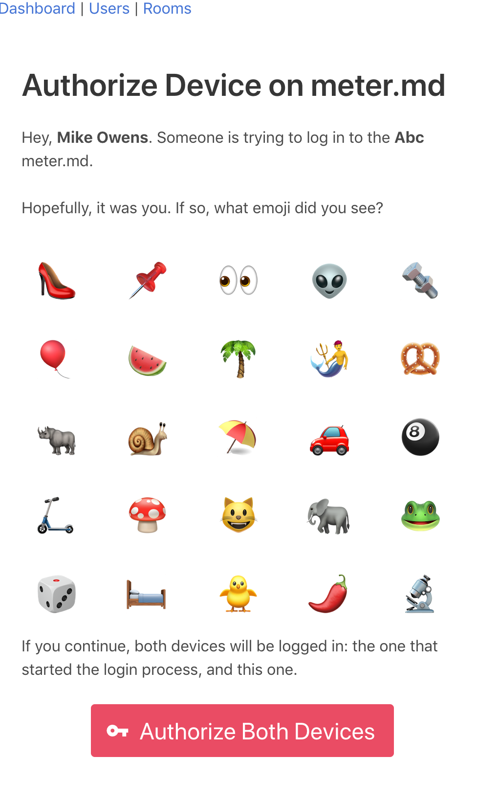
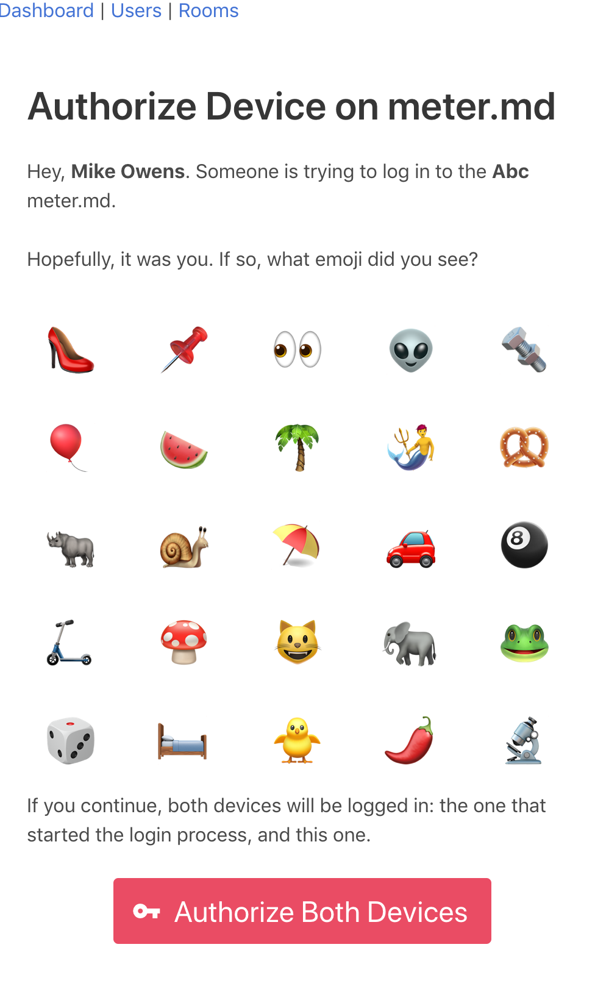

Hi! I'm Mike Owens, a software developer in the US, particularly focused on web
applications.
I love working on all areas of applications: from front-end work, API back-ends to devops.
I really like to see through complete features front-to-back.
I think I'm most effective in teams of one to ten, particularly when I'm spending
most of my time interacting with technical people.
I usually take contract developer positions locally (North Carolina) or remote, but have
been more interested in long-term situations lately.
I'm really used to the remote thing, so relocation would have to be a really special offer.
Skills and Technologies
Web Application Development
I'm a full-stack web developer. I've written and assisted the development in web
applications in Rails since 2006. My most comfortable tools include:
Rails
PostgreSQL
Linux
nginx
Redis
Sidekiq
Vue / Vuex
GraphQL
I've worked extensively with some of the alternatives to that list on client projects:
Node.js, React, mySQL, and Apollo.
I often consult with customers trying to bring Rails 2.x/3.x applications up to modern
standards.
Open Source & Miscellaneous Contributions
I try to contribute as much as I can to the open source projects that I rely upon.
From 2009-2011, I spent some time with a game development group implementing quick desktop
prototypes for mobile games. They play-tested the prototypes and determined what was worth
pursuing on mobile, which was much harder to develop on at the time.
This work commonly had me deep inside Box2D, Chipmunk Physics, Cocos2d-X, and
Mesa's OpenGL ES implementation to make sense of everything.
During the process, I ended up with Ruby bindings to a few geometry and physics libraries
in C and C++. I was able to release the following two under the MIT license:
I was a contributor to ActionCable before it was merged into Rails proper, and have
multiple contributions around the Ruby and Rails ecosystem.
I've contributed pretty heavily to
Opal: the Ruby to Javascript compiler.
My GitHub account has lot of pet and toy projects,
and also a few libraries I was contractually allowed to make public.
Here's an article I wrote a few years ago
documenting how I broke The Silk Road's CAPTCHA. It made the rounds on Hacker News and
Reddit for a week, and even got me interviews with Wired, CNN, and various other small tech
outlets. Never did see an actual published interview, though. The details were a bit too
nerdy, I think.
Unix/Linux Development in C and C++
I'm comfortable from the syscall level up with most Unixes. I can track down performance
issues and bugs through VMs, interpreters and libc's. Most development work I've done here
has been server side: supporting higher-level web applications with a performant native
backend for hot spots (image processing, etc).
Selected Large Projects
I mostly engage in few-month projects, a lot of which are so boring and specific to an industry
that it'd read like a dictionary. Here are a few recent things I'm particularly proud of:
meter.md
meter.md was a resort management web app developed in partnership
with a large rental management firm in North Carolina ("tens of thousands
of short-stay rentals each year"). It tracks the lifecyle of maintenance tickets,
housekeeping and occupancy status, and inventory.Role: I was the initial and primary developer, having pitched it
to the client during a previous engagement. I grew the team to four remote full-time
developers, and developed meter.md from 2011 until 2015. The project was maintained and
extended under contract until 2018.Stack: Rails 4.0 (later 5), PostgreSQL 9.4 through 10, and Elastic Search.
The front-end was based on Backbone.js: more of a "classic Javascript" style.Postmortem: meter.md was one of the first responsive mobile web apps I used
that "felt right". An easy, mobile-first UI experience was the huge driver for the project:
employees typically used the app while having their hands full in sometimes spotty cellular
service.
In terms of customer impact and satisfaction, meter.md was a huge success. I predict it
replaced 400 inter-organization phone calls a day with a mobile application that
tradesmen and housekeepers were comfortable using.
meter.md still runs multiple instances behind firewalls today. Its successor was razormd,
described below.
razormd

razormd was an ambitious project to greatly extend the capabilities
of meter.md into reservation tracking, employee scheduling, and shift from an "on-premises"
model to a SaaS.Role: Development lead, with a remote team of four very interdisciplinary
developers.Stack: Rails 5 API backend (REST and GraphQL endpoints). ES6 frontend
built with Vue.js, Vuex and SCSS. Additional infrastructure included: PostgreSQL 10 with heavy
GIS components, Sidekiq and Redis. Functional mobile apps for iOS and Android were produced
with PhoneGap. Integrated Twilio for SMS and voice. Tenanted application that auto-scaled
using Docker images and utilization monitoring.Features: We got some really impressive things working quick:
BLE (Bluetooth Low-Energy) Beacon based tracking: Each room in a test resort was
fitted with low-cost BLE beacons at the entrance. A PhoneGap-extended version of the
razormd web app detected when a housekeeper or maintenance personnel were in
proximity. This allowed employees to "check-in" to assignments implicitly without adding
app busywork, even when indoor GPS was too imprecise to pinpoint the location.
Passwordless Accounts: Employee turnover tends to be high in industries like
housekeeping. Many employees are not comfortable with technology, even including email.
razormd's on-boarding and account recovery process used SMS as a lowest common
denominator, though preferred push notifications. We extended "magic links" to SMS
while mitigating eavesdropping (SS7 attacks) via a shared secret: the user just selected
three emoji from a grid of twelve to log-in once clicking the link.
Way-Boring Integration with COBOL-era Systems: A lot of the travel industry
still communicates reservation and listing information via systems that were designed
in the 1980s and earlier (CRS and GDS systems). I negotiated access to these systems and
then wrote the most soul-sucking adapters to protocols that should've been retired in 1995.
Postmortem: The client and funding development partner was
acquired by a *very large* international company, and development was ceased during the
acquisition.
This is a shame, because the project had a huge amount of potential. It had some
interesting ideas that you wouldn't expect to see from a tame "back-office" app.


 Here's an article I wrote a few years ago
documenting how I broke The Silk Road's CAPTCHA. It made the rounds on Hacker News and
Reddit for a week, and even got me interviews with Wired, CNN, and various other small tech
outlets. Never did see an actual published interview, though. The details were a bit too
nerdy, I think.
Here's an article I wrote a few years ago
documenting how I broke The Silk Road's CAPTCHA. It made the rounds on Hacker News and
Reddit for a week, and even got me interviews with Wired, CNN, and various other small tech
outlets. Never did see an actual published interview, though. The details were a bit too
nerdy, I think.


 
